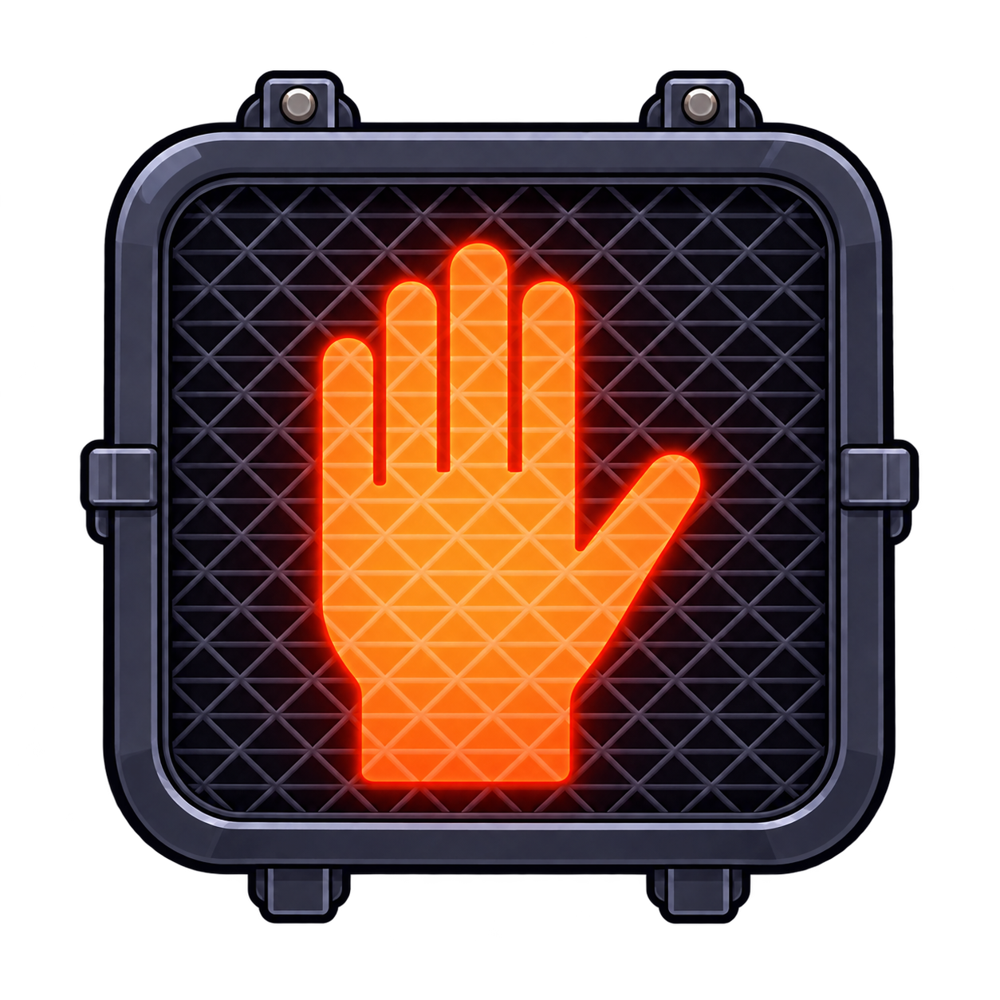
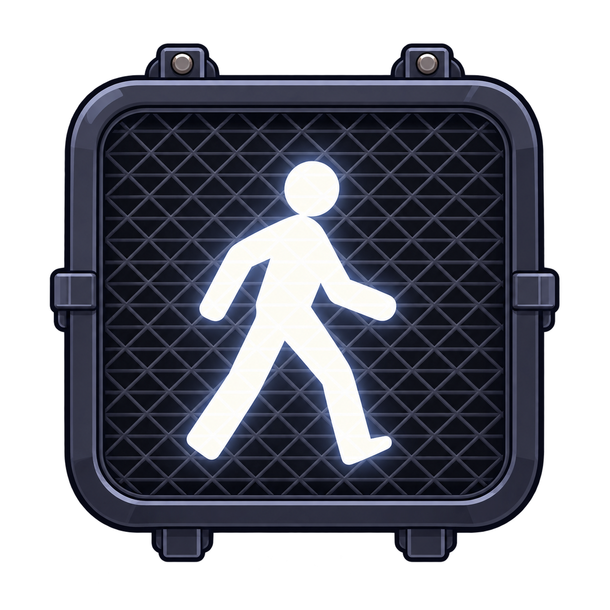
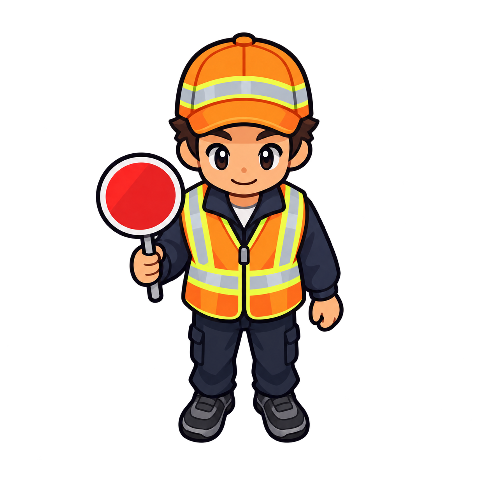
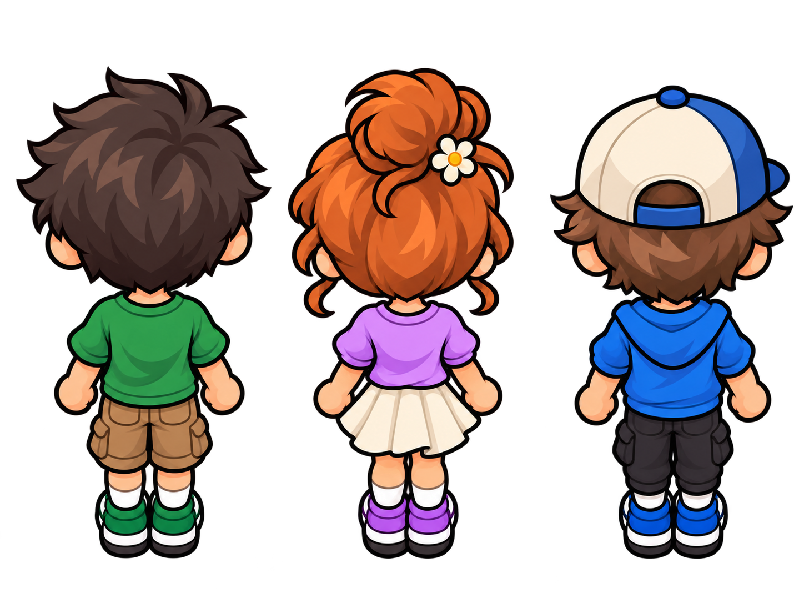
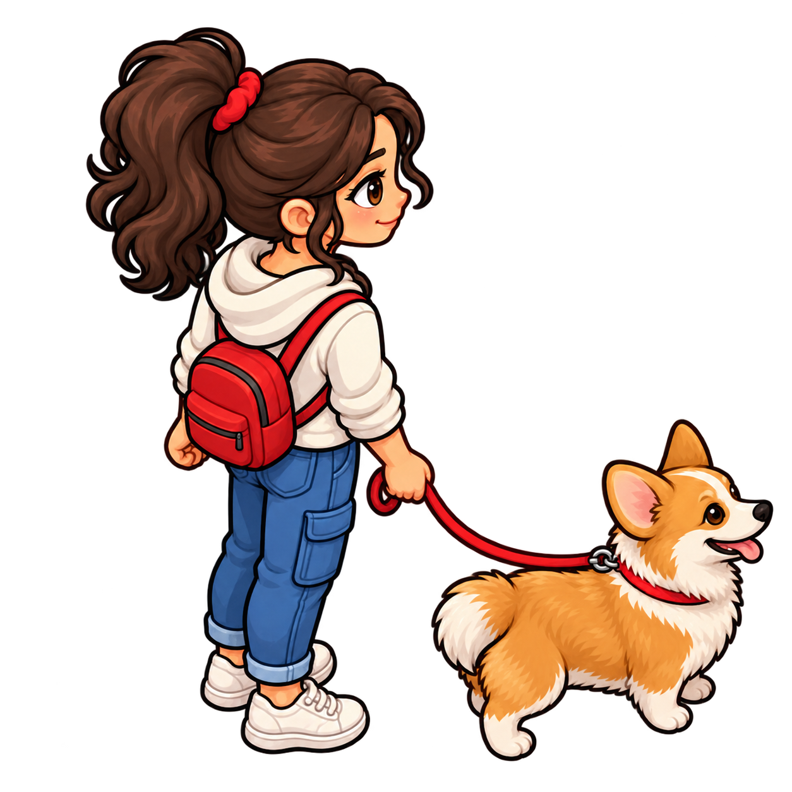
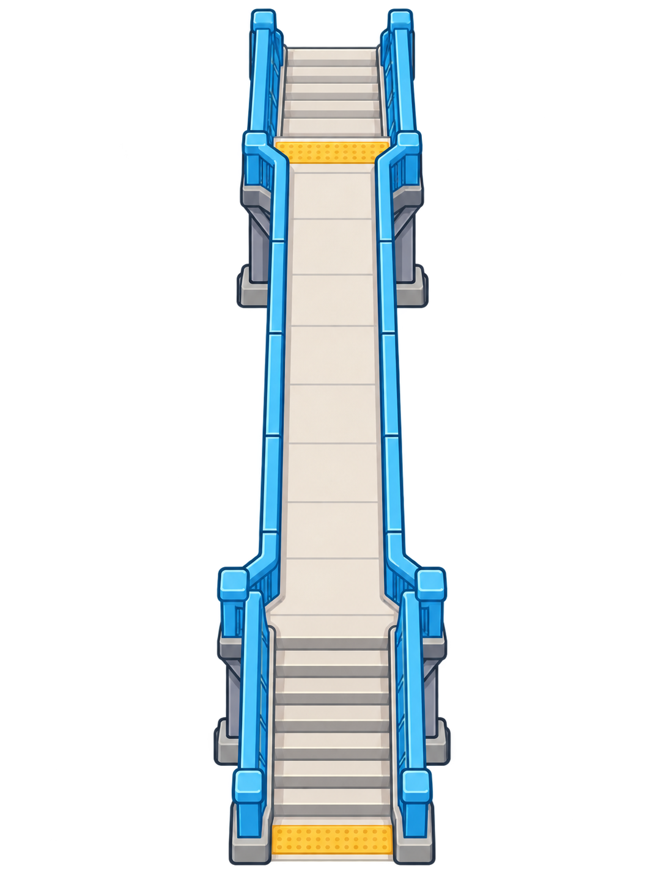

Помогни на героя си да стигне безопасно до училище!
Днес е учебен ден! Трябва да стигнеш безопасно до училище!
„Пазиград" е образователна игра за деца 5–8 години, базирана на реални правила за пътна безопасност. Кученцето Рони 🐕 помага на децата, когато направат грешка — обяснява правилното действие вместо да наказва.
🔒 Без реклами · 🔒 Без събиране на данни · 🔒 Без регистрация
💾 Напредъкът се запазва само на устройството
⚠️ Допълващ образователен инструмент, не заместител на обучението с възрастен. Препоръчваме да играете заедно с детето и да обсъждате наученото.

Направи правилните избори на всяка крачка от пътя!
Какво означава този знак?
Избери всичко задължително за безопасно каране на велосипед.
Дори най-добрите пешеходци правят грешки! Безопасността изисква практика. Нека опитаме отново!
Винаги спирай на бордюра и чакай зелената светлина, преди да стъпиш на пешеходната пътека!
Научи правилата за пресичане и как работят светофарите!
Кликни и задръж навсякъде на екрана, за да се движи героят ти! Можеш и с [W/A/S/D], [стрелки] или бутоните на екрана.
Винаги ходи по сивия тротоар. Когато стигнеш кръстовище, СПРИ зад жълтите плочки и провери сигнала!
На кръстовища отиди до жълтия бутон на стълба и натисни [SPACE] (или го тапни), за да заявиш пресичане! После чакай на бордюра, докато светне зелено!
Ако изтичаш на пътя докато сигналът е СТОП или МИГА, героят ти ще се спъне и ще седне на земята!
Имаш 3 опита (❤️ ❤️ ❤️). Ако направиш 3 грешки, ще направиш кратка пауза и ще повториш правилата, преди да опиташ отново!
ЧАКАЙ НА ТРОТОАРА: Колите имат зелено. Стой безопасно на бордюра и чакай търпеливо.

НЕ ЗАПОЧВАЙ ДА ПРЕСИЧАШ: Времето за пресичане изтича! Трябва да чакаш на бордюра:
1. Чакай при мигане ⏳ ➡️
2. Чакай при СТОП 🛑 ➡️
3. Пресечи при зелено 🟢
БЕЗОПАСНО Е ДА ПРЕСЕЧЕШ: Колите спират на стоп-линията! Пресечи спокойно по зебрата до отсрещния тротоар.
Нови приключения за пътна безопасност:

АКТИВНОЧакай на тротоара. Когато пазачът излезе със знака СТОП и ти махне да пресечеш — тръгни!

АКТИВНОПресечи заедно с групата. Никога не тичай напред! Ако изпреварш групата, те спират и героят ти пада!

АКТИВНОСпри на безопасно разстояние и натисни [SPACE] за да попиташ! Никога не се приближавай до куче без да питаш — уплашеното куче ще те свали и ще загубиш ❤️! Ако 👍 — можеш да го погалиш! Ако 👎 — ТРЯБВА да се отдалечиш!

АКТИВНОУлицата НЯМА пешеходна пътека! Трябва да използваш пешеходния надлез. Ако се опиташ да пресечеш директно — ще паднеш!
Следвай оранжевите конуси и обходните маршрути около строителни зони, без да стъпваш на пътя.
Ако непозната кола забави или те повика, стой далеч на тротоара, игнорирай ги и продължавай бързо.
Научи се да спираш и да гледаш наляво-надясно-наляво, преди да заобиколиш паркирани бусове и големи препятствия.
Образователна игра, създадена да научи деца на възраст 5–8 години на основните правила за безопасност на пътя чрез интерактивна игра. Базирана е на реални правила за пътна безопасност.
Рони е кученце-помощник, което дава съвети на децата, когато направат грешка. Вместо наказание, Рони обяснява какво е правилното действие и насърчава да опитат отново.
🔒 Без реклами — играта не съдържа никакви реклами.
🔒 Без събиране на данни — не събираме лична информацция.
🔒 Без регистрация — не е нужен акаунт.
💾 Локален прогрес — напредъкът се запазва само на устройството.
Тази игра е допълващ образователен инструмент, не заместител на обучението с възрастен. Подходяща за деца на 5–8 години. Препоръчваме да играете заедно с детето си и да обсъждате наученото.